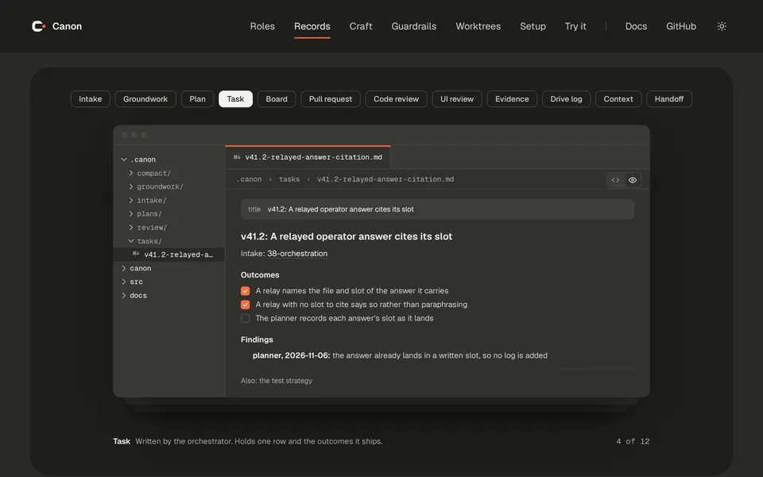

A pull request arrives with a film of the change
A diff cannot show a hover or a focus ring. Canon films the change in the running app and posts the reel beside the checklist a reviewer ticks.
Evidence · pull request, the records section

- pick the task
- tick an outcome
- show it rendered
- The Task sheet comes up on its pick UI reviewer
- A ticked outcome reads [x] in the source UI reviewer
- The rendered view keeps the tick UI reviewer